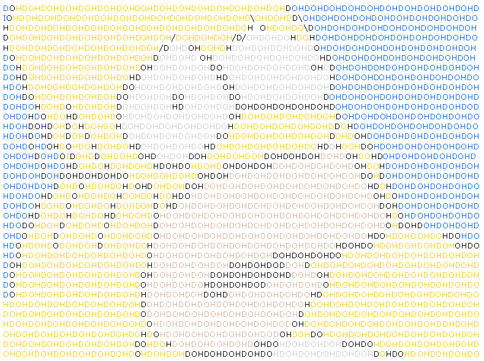
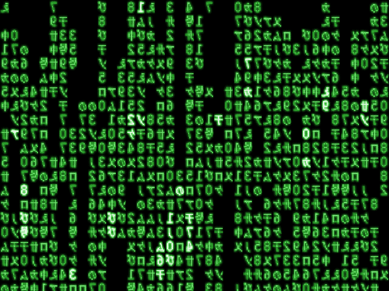
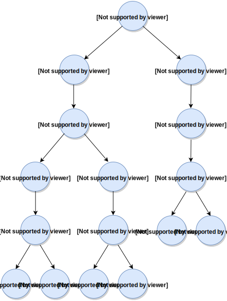

<!doctype html> <html lang="en">
<head>
  <meta charset="utf-8">

  <title>Introduction to .nl files</title>

  <meta name="author" content="Victor Zverovich">

  <meta name="apple-mobile-web-app-capable" content="yes" />
  <meta name="apple-mobile-web-app-status-bar-style" content="black-translucent" />

  <meta name="viewport" content="width=device-width, initial-scale=1.0, maximum-scale=1.0, user-scalable=no">

  <link rel="stylesheet" href="../../common/reveal.js/css/reveal.css">
  <link rel="stylesheet" href="../../common/reveal.js/css/theme/beige.css" id="theme">

  <!-- For syntax highlighting -->
  <link rel="stylesheet" href="../../common/reveal.js/lib/css/zenburn.css">

  <!-- If the query includes 'print-pdf', include the PDF print sheet -->
  <script>
    if( window.location.search.match(/print-pdf/gi) ) {
      var link = document.createElement('link');
      link.rel = 'stylesheet';
      link.type = 'text/css';
      link.href = '../../common/reveal.js/css/print/pdf.css';
      document.getElementsByTagName('head')[0].appendChild(link);
    }
  </script>

  <style>
  body {background: white;}
  comment {display: none;}

  .reveal h1 {
    padding-bottom: 50px;
  }
  
  .reveal h1,
  .reveal h2 {
    font-size: 200%;
    text-transform: none;
    text-align: center;
    margin: 0;
  }
  .reveal section:first-of-type {
    text-align: center;
  }
  .reveal section {
    text-align: left;
  }
  
  .reveal p {
    margin-top: 10px;
    margin-bottom: 10px;
  }

  .reveal .MathJax_Display {
    margin-top: 20px;
    margin-bottom: 20px;
  }
  .reveal .plot {
    box-shadow: 0 0 20px #888888;
    margin-left: auto; margin-right: auto;
  }
  
  .reveal .transp-image {
    display: block;
    margin-left: auto;
    margin-right: auto;
    border: none;
    box-shadow: none;
  }
  
  /* Fix nohighlight styles. */
  .reveal pre code { display: block; background: #3F3F3F; color: #DCDCDC; }
  
  /* Fix image styles. */
  .reveal section img { border: none; box-shadow: none; }
  
  img.float-right {
    clear:right;
    float:right;
  }

  div .new { color: red; }

  /* D3 styles */
  .node circle {
    fill: #fff;
    stroke: steelblue;
    stroke-width: 1.5px;
  }

  .node {
    font: 20px sans-serif;
  }

  .link {
    fill: none;
    stroke: #ccc;
    stroke-width: 1.5px;
  }
  
  .chart rect {
    fill: steelblue;
  }

  .chart .bar text {
    fill: white;
    font: 20px sans-serif;
    text-anchor: end;
  }
  .chart .axis text {
    font: 20px sans-serif;
    fill: black;
  }
  .chart .x.axis text {
    font: 16px sans-serif;
  }

  .chart .axis path,
  .chart .axis line {
    fill: none;
    stroke: #000;
    shape-rendering: crispEdges;
  }
  .chart .y.axis line,
  .chart .y.axis path {
    display: none;
  }
  
  .reveal pre code { max-height: 500px; }
  </style>

  <script type="text/javascript" charset="utf-8" src="MathBox.js/vendor/domready.js"></script>
  <script type="text/javascript" charset="utf-8" src="MathBox.js/build/MathBox-bundle.js"></script>

  <link href="MathBox.js/base.css" rel="stylesheet" type="text/css" media="screen">  
</head>

<body>
<script src="../../common/reveal.js/lib/js/head.min.js"></script>
<script src="../../common/reveal.js/js/reveal.js"></script>


<div class="reveal">
<!-- Any section element inside of this container is displayed as a slide -->
<div class="slides">

<section data-markdown data-separator="---">
<script type="text/template">
Introduction to .nl files
=========================

Victor Zverovich

<small><a href="mailto:viz@ampl.com">viz@ampl.com</a></small>

AMPL Optimization Inc.

<br>

<small>University of Santiago de Compostela, <br>
January 18-19, 2016, Spain</small>
---

## Outline

* Overview and features

* Reading and writing .nl files

* Binary and text forms

* Comparison with MPS and OSiL

* Efficiency

* References

---

## NL format

* Initially developed for connecting solvers to AMPL, but now used
  in other systems and for representing benchmark problems

* One of the most widely used (under the hood) formats for representing
  optimization problems

* Supported by many solvers either natively or through separate drivers

* Used in conjunction with the SOL format that represents solutions

---

## Features

* Two forms: binary and text

* Low level: optimized for solver input rather than for human readability

* Compact: small fraction of a size of an equivalent MPS file

* Efficient to read and write

* Supports a wide range of problem types

* Supports metadata: initial solution, branching priorities, etc.

* Extensible

---

## Supported problem types

NL format supports a wide range of optimization problem types:

* linear programming
* quadratic programming
* second-order cone programming
* semidefinite programming
* general nonlinear problems
* complementarity problems
* logic and constraint programming
* ...

All in discrete and continuous variables

---

## Why use .nl files?

* Solver isolation

  * Solvers can crash, run out of memory and don't recover properly,
    leak memory, stall.
  * Better run them in a separate process.
  * Also allows interrupting the solution process at any time.

* Reproducing problems

  * Reproducing user environment can be tricky: solve in the middle of
    a script, data in a database
  * An .nl file captures all the information for a single
    problem instance, easy to share with solver developers

---

## Writing .nl files from AMPL

* Normally .nl files are written in a temporary directory
  transparently for the user when the `solve` command is invoked.

* The `write` command can be used to write the file explicitly:

```python
ampl: model prod.mod
ampl: data prod.dat  
ampl: write gtest;
ampl: write btest;
```

* The letter before the filename determines the output form:
  - 'g' for text
  - 'b' for binary
---

## Writing .nl files using ASL

* Construct a problem instance programmatically

* Use the AMPL Solver Library to write it

* Quite involved

* AMPL/MP has some facilities to simplify this but they
  are work-in-progress.

* Reference:

  David Gay (2005). Writing .nl Files (Technical report).
  Albuquerque, NM: Sandia National Laboratories. CiteSeerX: 10.1.1.60.9659

---

## Reading .nl files

* AMPL Solver Library: C library, used by most solvers

* AMPL/MP C++ library: modern, type-safe and fast alternative to ASL.
  Used in some new solvers such as constraint programming solvers
  (ilogcp, gecode, jacop), LocalSolver.

* Connecting a solver to AMPL doesn't require reading NL files,
  there are higher-level APIs for this.

---

## Text form

* 
  Portable: can be used for storing benchmark problems

* Somewhat human readable

* Consists of a header with problem dimensions and multiple sections such as

  * Objective type and nonlinear part of an objective expression
  * Linear part of an objective expression & gradient sparsity
  * Jacobian sparsity & linear terms in constraints

---

## Example

Header:

```nohighlight
g3 2 1 0        # problem test
 2 1 1 0 0      # vars, constraints, objectives, ranges, eqns
 0 0    # nonlinear constraints, objectives
 0 0    # network constraints: nonlinear, linear
 0 0 0  # nonlinear vars in constraints, objectives, both
 0 0 0 1       # linear network variables; functions; arith, flags
 0 0 0 0 0     # discrete variables: binary, integer, nonlinear (b,c,o)
 2 2    # nonzeros in Jacobian, gradients
 0 0    # max name lengths: constraints, variables
 0 0 0 0 0      # common exprs: b,c,o,c1,o1
```

Sections:
```nohighlight
C0
n0
O0 1
n0
r
1 40
b
0 0 6000
...
```
---

## Binary form

* 
  Nonportable: for transfer to another machine use the text form instead

* Not human readable

* Faster input/output

* The default when using `solve` in AMPL

* The same structure as the text form

---

## Expression Trees


$$\mathrm{minimize} \sqrt{(x + 2) ^ 2 + (y + 1) ^ 2} + \sqrt{(x + y) ^ 2}$$

---

<h2>Nonlinear Expressions</h2>
<div style="" id="trees"></div>

---

## Auxiliary files

* `<basename>.col`: column (variable) names

* `<basename>.row`: row (constraint) names

* Example:

  ```python
option auxfiles rc;
write gtest;
```

  writes `test.nl`, `test.col` and `test.row`.

* Can be used both with text and binary form.

* Useful for debugging

---

## Auxiliary files

Useful for debugging solver errors containing variable and constraint names

Example:

```cs
Constraints 'C1' and 'C2' are inconsistent
```

using 

```cs
option auxfiles r;
```

before solve should give AMPL constraint names.

Another option is to use `_scon`:

```cs
expand _scon[1];
expand _scon[2];
```

---

## NL comments

Use the `nl_comments` option to enable explanatory comments in .nl files:

```python
option nl_comments 1;
write gtest;
```

Output:
```nohighlight
...
C0      #Time
n0
O0 1    #Total_Profit
n0
r       #1 ranges (rhs's)
1 40
b       #2 bounds (on variables)
0 0 6000
0 0 4000
k1      #intermediate Jacobian column lengths
1
J0 2
```

---

## Extensibility

NL format provides several extension mechanisms:

* User-defined functions

  * Provided via AMPL function libraries
  
  * Can be used to represent modeling constructs such as `element` CP constraint

* Suffixes for problem entities: metadata that can be
  attached to variables, objectives, constraints and problems

  * `.priority`, `.direction`: branching priority and direction in CPLEX
  
  * `.iis`: irreducible infeasible set of constraints in Gurobi

---

## Comparison with MPS

Similarities:

* Neither is particularly human readable

Advantages of NL:

* More compact

* More efficient to read (no name lookups)

* Supports more problem types

* No precision loss unlike fixed-form MPS

Advantages of MPS:

* Some legacy/exotic solvers only recognize MPS

---

## Writing MPS

The `write` command can be used to write MPS too:

```python
ampl: model prod.mod
ampl: data prod.dat  
ampl: write mtest;
```

`test.mps`:
```nohighlight
NAME          test
ROWS
 L  R0001
 N  R0002
COLUMNS
    C0001     R0001     0.005
    C0001     R0002     25
    C0002     R0001     0.0071428571
    C0002     R0002     30
RHS
    B         R0001     40
BOUNDS
 UP BOUND     C0001     6000
 UP BOUND     C0002     4000
ENDATA
```

---

## Optimization Services instance Language (OSiL)

* 
  Optimization Services: a general design for XML-based, service-oriented, optimization-centered distributed architecture.
  http://www.optimizationservices.org/

* Series of XML-based formats: 
  * OSiL: Optimization Services instance Language
  * OSrL: Optimization Services result Language
  * OSoL: Optimization Services option Language

* Flexible and well-defined via schema

* Rather verbose and inefficient (at least in terms of space) in the tradition of XML

* Not widely used

---

## OSiL example

$(1 - x_0)^2 + 100(x_1 - x^2_0)^2 + 9 x_1$

```xml
<nl idx="-1">
  <plus>
    <power>
      <minus>
        <number value="1.0"/>
        <variable coef="1.0" idx="0"/>
      </minus>
      <number value="2.0"/>
    </power>
    <times>
      <power>
        <minus>
          <variable coef="1.0" idx="0"/>
          <power>
            <variable coef="1.0" idx="1"/>
            <number value="2.0"/>
          </power>
        </minus>
        <number value="2.0"/>
      </power>
      <number value="100"/>
    </times>
  </plus>
</nl>
```

---

## Efficiency

* Reading NL files doesn't require name lookups, only numeric indices are used

* Special case for linear parts of constraints and objectives for more efficient
  representation

* Problem dimensions are given in the header: memory can be reserved

* Binary form: almost no parsing, just copying data

* Common subexpressions can be stored once (DAG)

---

## Performance

<svg id="nl-text" class="chart"></svg><svg id="nl-binary" class="chart"></svg>

* 730 problems from the [CUTE](http://orfe.princeton.edu/~rvdb/ampl/nlmodels/cute/index.html) test set
* AMPL/MP NL reader w/o problem construction is up to 6x faster than ASL
* Problem construction is faster than ASL, but has room for improvement (pool allocator)

---

## References

* David Gay (2005). Writing .nl Files (Technical report).
  Albuquerque, NM: Sandia National Laboratories. CiteSeerX: 10.1.1.60.9659

* AMPL Solver Library: http://ampl.com/netlib/ampl/index.html

* AMPL/MP (includes ASL): https://github.com/ampl/mp

* NL reader documentation: http://ampl.github.io/nl.html

---

## Questions?

</script>
</section>

</div>
</div>

<script>
  // Full list of configuration options available here:
  // https://github.com/hakimel/reveal.js#configuration
  Reveal.initialize({
    controls: true,
    progress: true,
    history: true,
    center: true,

    theme: Reveal.getQueryHash().theme, // available themes are in /css/theme
    transition: Reveal.getQueryHash().transition || 'default', // default/cube/page/concave/zoom/linear/fade/none

    // Parallax scrolling
    // parallaxBackgroundImage: 'https://s3.amazonaws.com/hakim-static/reveal-js/reveal-parallax-1.jpg',
    // parallaxBackgroundSize: '2100px 900px',

    math: {
      mathjax: '../../common/MathJax-2.6.1/MathJax.js',
      config: 'TeX-AMS-MML_HTMLorMML'  // See http://docs.mathjax.org/en/latest/config-files.html
    },

    // Optional libraries used to extend on reveal.js
    dependencies: [
      { src: '../../common/reveal.js/lib/js/classList.js', condition: function() { return !document.body.classList; } },
      { src: '../../common/reveal.js/plugin/markdown/marked.js', condition: function() { return !!document.querySelector( '[data-markdown]' ); } },
      { src: '../../common/reveal.js/plugin/markdown/markdown.js', condition: function() { return !!document.querySelector( '[data-markdown]' ); } },
      { src: '../../common/reveal.js/plugin/highlight/highlight.js', async: true, callback: function() { hljs.initHighlightingOnLoad(); } },
      { src: '../../common/reveal.js/plugin/zoom-js/zoom.js', async: true, condition: function() { return !!document.body.classList; } },
      { src: '../../common/reveal.js/plugin/notes/notes.js', async: true, condition: function() { return !!document.body.classList; } },
      { src: '../../common/reveal.js/plugin/math/math.js', async: true }
    ]
  });
  //Reveal.addEventListener('slidechanged', function(event) {
  //  document.getElementById("logo").style.visibility = Reveal.isFirstSlide() ? 'hidden' : 'visible';
  //});
</script>


<script src="../../common/d3/d3.v3.min.js"></script>
<script>
function type(d) {
  d.value = +d.value;
  return d;
}

function makeChart(selector, data, title, showYAxis) {
  var margin = {top: 100, right: 30, bottom: 50, left: 150},
      width = 500 - margin.left - margin.right,
      height = 280 - margin.top - margin.bottom;
  if (!showYAxis)
    margin.left = 10;

  var chart = d3.select(selector)
    .attr("width", width + margin.left + margin.right)
    .attr("height", height + margin.top + margin.bottom)
    .append("g")
      .attr("transform", "translate(" + margin.left + "," + margin.top + ")");

  var x = d3.scale.linear()
    .domain([0, d3.max(data, function (d) { return d.Time; })])
    .range([0, width]);

  var y = d3.scale.ordinal()
    .domain(data.map(function (d) { return d.Method; }))
    .rangeBands([0, height], 0.1);

  var bar = chart.selectAll("g").data(data)
    .enter()
      .append("g")
        .attr("class", "bar")
        .attr("transform", function(d) { return "translate(0, " + y(d.Method) + ")"; });

  bar.append("rect")
    .attr("width", function (d) { return x(d.Time); })
    .attr("height", y.rangeBand());

  bar.append("text")
    .attr("x", function (d) { return x(d.Time) - 10; })
    .attr("y", y.rangeBand() / 2)
    .attr("dy", "0.35em")
    .text(function (d) { return d.Time; });

  chart.append("g")
    .append("text")
      .attr("x", width / 2)
      .attr("y", -margin.top / 2)
      .style("text-anchor", "middle")
      .text(title);
  chart.append("g")
    .attr("class", "x axis")
    .call(d3.svg.axis().scale(x).orient("top"))
    .append("text")
      .attr("x", width / 2)
      .attr("y", -25)
      .style("text-anchor", "middle")
      .text("Time, s");

  var xRelative = d3.scale.linear()
    .domain([0, d3.max(data, function (d) { return d.Time / data[0].Time; })])
    .range([0, width]);
  chart.append("g")
    .attr("class", "x axis")
    .attr("transform", "translate(0," + height + ")")
    .call(d3.svg.axis().scale(xRelative).ticks(5))
    .append("text")
      .attr("x", width / 2)
      .attr("y", 40)
      .style("text-anchor", "middle")
      .text("Time, relative to nl reader");

  if (showYAxis) {
    var yAxis = d3.svg.axis()
      .scale(y)
      .orient("left");
    chart.append("g")
      .attr("class", "y axis")
      .call(yAxis);
  }
}

Reveal.addEventListener('ready', function(event) {
  var data = d3.csv.parse((function () {/*
Method,Time
nl reader,1.73
nl reader+build,3.74
ASL,4.69
*/}).toString().match(/[^]*\/\*\n([^]*)\*\/\}$/)[1], type);
  makeChart("#nl-text", data, "Text 218.9 MiB", true);

  var data = d3.csv.parse((function () {/*
Method,Time
nl reader,0.50
nl reader+build,2.37
ASL,3.23
*/}).toString().match(/[^]*\/\*\n([^]*)\*\/\}$/)[1], type);
  makeChart("#nl-binary", data, "Binary 246.9 MiB");
  });
</script>

<script>
  // Create expression tree hierarchy.
  Reveal.addEventListener('ready', function(event) {
    var m = [0, 120, 20, 120],
        w = 1280 - m[1] - m[3],
        h = 600 - m[0] - m[2],
        i = 0;

    var tree = d3.layout.tree()
        .size([h, w]);

    var diagonal = d3.svg.diagonal()
        .projection(function(d) { return [d.y, d.x]; });

    var vis = d3.select("#trees").append("svg:svg")
        .attr("width", w + m[1] + m[3])
        .attr("height", h + m[0] + m[2])
      .append("svg:g")
        .attr("transform", "translate(" + m[3] + "," + m[0] + ")");

    var root = {
    "name": "expression",
    "children": [
      {
      "name": "numeric",
      "children": [
        {"name": "numeric constant"},
        {"name": "reference to a variable or a common expression"},
        {"name": "unary: unary -, abs, tan, ..."},
        {"name": "binary: +, -, *, /, div, less, ..."},
        {"name": "if-then-else"},
        {"name": "piecewise-linear term"},
        {"name": "function call"},
        {"name": "iterated: min, max, sum, numberof"},
        {"name": "symbolic numberof"},
        {"name": "count"}
      ]
      },
      {
      "name": "logical",
      "children": [
        {"name": "logical constant (0 or 1)"},
        {"name": "not (!)"},
        {"name": "binary logical: ||, &&, <==>"},
        {"name": "relational: <, <=, =, !=, >=, >"},
        {"name": "logical count: atleast, atmost, exactly"},
        {"name": "implication: ==> else"},
        {"name": "iterated logical: exists, forall"},
        {"name": "pairwise: alldiff, !alldiff"}
      ]
      },
      {
      "name": "string",
      "children": [
        {"name": "string literal"},
        {"name": "symbolic if-then-else"}
      ]
      }
    ]
    };

    root.x0 = h / 2;
    root.y0 = 0;

    function toggleAll(d) {
      if (d.children) {
        d.children.forEach(toggleAll);
        toggle(d);
      }
    }

    // Initialize the display to show a few nodes.
    //root.children.forEach(toggleAll);
    //toggle(root.children[1]);
    //toggle(root.children[1].children[2]);
    //toggle(root.children[9]);
    //toggle(root.children[9].children[0]);

    update(root);

    function update(source) {
      var duration = d3.event && d3.event.altKey ? 5000 : 500;

      // Compute the new tree layout.
      var nodes = tree.nodes(root).reverse();

      // Normalize for fixed-depth.
      nodes.forEach(function(d) { d.y = d.depth * 180; });

      // Update the nodes…
      var node = vis.selectAll("g.node")
          .data(nodes, function(d) { return d.id || (d.id = ++i); });

      // Enter any new nodes at the parent's previous position.
      var nodeEnter = node.enter().append("svg:g")
          .attr("class", "node")
          .attr("transform", function(d) { return "translate(" + source.y0 + "," + source.x0 + ")"; })
          .on("click", function(d) { toggle(d); update(d); });

      nodeEnter.append("svg:circle")
          .attr("r", 1e-6)
          .style("fill", function(d) { return d._children ? "lightsteelblue" : "#fff"; });

      nodeEnter.append("svg:text")
          .attr("x", function(d) { return d.children || d._children ? -10 : 10; })
          .attr("dy", ".35em")
          .attr("text-anchor", function(d) { return d.children || d._children ? "end" : "start"; })
          .text(function(d) { return d.name; })
          .style("fill-opacity", 1e-6);

      // Transition nodes to their new position.
      var nodeUpdate = node.transition()
          .duration(duration)
          .attr("transform", function(d) { return "translate(" + d.y + "," + d.x + ")"; });

      nodeUpdate.select("circle")
          .attr("r", 4.5)
          .style("fill", function(d) { return d._children ? "lightsteelblue" : "#fff"; });

      nodeUpdate.select("text")
          .style("fill-opacity", 1);

      // Transition exiting nodes to the parent's new position.
      var nodeExit = node.exit().transition()
          .duration(duration)
          .attr("transform", function(d) { return "translate(" + source.y + "," + source.x + ")"; })
          .remove();

      nodeExit.select("circle")
          .attr("r", 1e-6);

      nodeExit.select("text")
          .style("fill-opacity", 1e-6);

      // Update the links…
      var link = vis.selectAll("path.link")
          .data(tree.links(nodes), function(d) { return d.target.id; });

      // Enter any new links at the parent's previous position.
      link.enter().insert("svg:path", "g")
          .attr("class", "link")
          .attr("d", function(d) {
            var o = {x: source.x0, y: source.y0};
            return diagonal({source: o, target: o});
          })
        .transition()
          .duration(duration)
          .attr("d", diagonal);

      // Transition links to their new position.
      link.transition()
          .duration(duration)
          .attr("d", diagonal);

      // Transition exiting nodes to the parent's new position.
      link.exit().transition()
          .duration(duration)
          .attr("d", function(d) {
            var o = {x: source.x, y: source.y};
            return diagonal({source: o, target: o});
          })
          .remove();

      // Stash the old positions for transition.
      nodes.forEach(function(d) {
        d.x0 = d.x;
        d.y0 = d.y;
      });
    }

    // Toggle children.
    function toggle(d) {
      if (d.children) {
        d._children = d.children;
        d.children = null;
      } else {
        d.children = d._children;
        d._children = null;
      }
    }
  });
</script>

<!-- Google Analytics -->
<script type="text/javascript">
  var _gaq = _gaq || [];
  _gaq.push(['_setAccount', 'UA-20116650-1']);
  _gaq.push(['_trackPageview']);
  (function() {
    var ga = document.createElement('script'); ga.type = 'text/javascript'; ga.async = true;
    ga.src = ('https:' == document.location.protocol ? 'https://ssl' : 'http://www') + '.google-analytics.com/ga.js';
    var s = document.getElementsByTagName('script')[0]; s.parentNode.insertBefore(ga, s);
  })();
</script>
</body>
</html>
